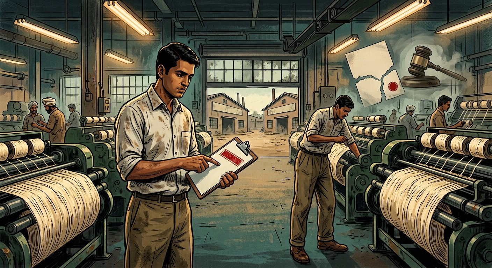
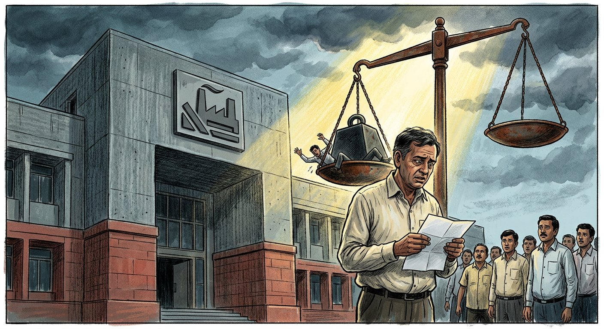

Topic 7: Limitations on Freedom of Contract — Circumstances in which Agreements become Void or Voidable
Indian Contract Act, 1872 — Sections 23 to 30 | Unlawful agreements • Public policy • Consideration in part unlawful • Without consideration • Restraint of marriage / trade / legal proceedings • Uncertainty • Wager. Comprehensive deep notes strictly anchored in DU Case Material (2023) — Cases 25–28 (Book pp. 106–145) — with full statutory text, elements, illustrations, flowcharts, hypothetical case visuals, and DU-pattern PYQs with model answers.
📚 Primary source: DU Case Material LB-102 (2023)📜 Bare Act: ICA, 1872 (Ss. 2, 10, 23–30, 42/69 Partnership Act)⚖️ 4 DU cases in full IRAC++ format📝 12 PYQs + best model answers
Part A — Foundation
1. Freedom of Contract and why Sections 23–30 limit it
Starting point — S. 10, ICA: “All agreements are contracts if they are made by the free consent of parties competent to contract, for a lawful consideration and with a lawful object, and are not hereby expressly declared to be void.” Topic 7 is the second half of S. 10: even if proposal + acceptance + capacity + free consent exist, the agreement still fails if (i) consideration/object is unlawful under S. 23, or (ii) it falls in the expressly-void catalogue of Ss. 24–30 (read with Ss. 20–22 on mistake, S. 56 on impossibility, covered in other Topics).
🔑 Conceptual hook for answersFreedom of contract (“sanctity of contract is the basis of society” — Gherulal, para 23, DU p. 114) is the rule; voidness is the exception. Courts enforce promises unless a statute or a clear, incontestable head of public policy requires them to relieve the party. Gherulal states the classical/restrictive position; Brojo Nath (DU pp. 128–144) adds the modern/expansive correction for unequal bargaining power, standard-form contracts and distributive justice. In DU answers, always show both and reconcile them.
1.1 The S. 10 → Ss. 23–30 pipeline
Agreement (S. 2(e): promise(s) forming consideration for each other)
⬇
Competent parties? (S. 11) + Free consent? (Ss. 13–22) + Consideration? (S. 2(d), S. 25)
⬇ yes
Is consideration/object lawful under S. 23? (forbidden by law? defeats law? fraud? injury? immoral? opposed to public policy?)
⬇ yes ⬇ no → VOID (S. 23, last para)
Is it expressly declared void? S. 24 (part unlawful) · S. 25 (no consideration) · S. 26 (marriage) · S. 27 (trade) · S. 28 (legal proceedings) · S. 29 (uncertainty) · S. 30 (wager)
⬇ no ⬇ yes → VOID (to that extent / wholly)
CONTRACT — enforceable by law (S. 2(h))
1.2 Key definitions you must quote (S. 2)
Provision
Text (substance) + Exam use
S. 2(g)
“An agreement not enforceable by law is said to be void.” — Use for Ss. 23–30 outcomes.
S. 2(h)
“An agreement enforceable by law is a contract.” — Use to conclude validity.
S. 2(i)
“Enforceable at the option of one or more parties but not of the other(s)” = voidable contract (Ss. 19, 19A: coercion, fraud, misrepresentation, undue influence).
S. 2(j)
“A contract which ceases to be enforceable becomes void when it ceases to be enforceable” (e.g., S. 56 supervening impossibility; S. 32 contingent event impossible).
Part B — Core distinction
2. Void vs Voidable vs Illegal vs Unenforceable — the complete map
This distinction opens Topic 7 in the DU syllabus and is examined through Case 28 — Dhurandhar Prasad Singh (DU pp. 145–147). Master the table first, then the theory.
Dimension
VOID agreement (Ss. 23–30, S. 20)
VOIDABLE contract (Ss. 19, 19A)
Meaning
Void ab initio — never a contract; “not enforceable by law” (S. 2(g)).
Valid until avoided; enforceable at option of aggrieved party (S. 2(i)).
Cause
Unlawful object/consideration, no consideration, restraint, uncertainty, wager, mutual mistake, impossibility.
Consent caused by coercion, undue influence, fraud, misrepresentation.
Who can challenge?
Anyone; can be disregarded even in collateral proceedings; no declaration strictly necessary for wholly-without-jurisdiction type (Dhurandhar, Durayappah).
Only the party whose consent was vitiated; stands good unless and until set aside (Peachey: “remains good until set aside”).
Effect of setting aside
Already a nullity — “you cannot continue a nullity” (DPP v. Head); subsequent orders also nullities; not admissible.
Avoidance needed (application to court); third-party rights acquired bona fide before avoidance may be protected (cf. S. 27, Sale of Goods; S. 178A ICA pledge).
Restitution
S. 65: person receiving advantage under void agreement/contract-becoming-void must restore it (Tarsem Singh link).
S. 64: rescinding party must restore benefits received.
Illustration
A agrees to pay B ₹1,000 to commit murder → void u/s 23. Wager on match → void u/s 30.
A threatens B to sell house → voidable at B’s option u/s 19.
⚖️ Dhurandhar’s three shades (DU p. 147 — quote in answers)(i) Wholly without jurisdiction / coram non judice / void ab initio — no declaration needed; law takes no notice; can be disregarded collaterally. (ii) Void as against one party (e.g., transaction against minor without next friend) — good against the world, but if the minor avoids it successfully, it becomes void from the very beginning. (iii) Not a nullity but needs a declaration to avoid (e.g., forged document suit) — apparent state is real until proved otherwise; once declared, void from beginning. A transaction requiring setting aside and avoided only from date of setting aside = voidable. If legal effect cannot be taken away without setting aside, it is voidable, not void.
Is the flaw so grave it goes to root / lacks jurisdiction / is forbidden?
YES → VOID: nullity, anyone can ignore, no need to sue (but may sue for declaration — Schroeder via Brojo Nath)
NO, flaw is within jurisdiction / consent-defect → VOIDABLE: valid till avoided by aggrieved party via rescission/suit
📝 Related pair: “Illegal” vs “Void” (Gherulal point)Every illegal agreement is void, but every void agreement is not illegal. Example: wager is void (S. 30) but not illegal — hence collateral agreements (partnership to share wager losses, loan to pay wager) remain enforceable (outside Bombay) — Gherulal, DU pp. 106–118. If object were illegal (murder, fraud, crime), collateral transactions tainted by it also fail.
Part C — S. 23
3. Section 23 — What considerations and objects are lawful (the gateway)
📜 S. 23, Indian Contract Act, 1872 — Full text
“The consideration or object of an agreement is lawful, unless —
(i) it is forbidden by law; or
(ii) is of such a nature that, if permitted, it would defeat the provisions of any law; or
(iii) is fraudulent; or
(iv) involves or implies injury to the person or property of another; or
(v) the Court regards it as immoral, or opposed to public policy.
In each of these cases, the consideration or object of an agreement is said to be unlawful. Every agreement of which the object or consideration is unlawful is void.”
✅ Exam formula for any S. 23 problemStep 1: Identify consideration (S. 2(d) — what each party gives) and object (purpose of the agreement). Step 2: Test against the 5 heads one by one. Step 3: Cite the matching illustration (a)–(k). Step 4: Conclude void + consequence for collateral promises (S. 24 / Gherulal void-vs-illegal). Step 5: Add severability if partly lawful (S. 24, Ss. 57–58).
3.1 The five heads — each in depth
Head 1 — “Forbidden by law”
An act is “forbidden” when a statute or rule prohibits it and attaches a penalty, prohibition or nullification — e.g., committing a crime, selling liquor without licence, stifling prosecution (Ill. (h)), trafficking in public offices (Ill. (f)). Test from Gherulal (DU pp. 110–112): “forbidden” ≠ merely “void / unenforceable”. A wager is void u/s 30 but entering it is no legal wrong — no penalty, no prohibition — so it is not “forbidden by law” under S. 23(a). Contrast with Bombay (now Maharashtra/Gujarat) where the local Act prohibited wagers — there it is forbidden. Always ask: does the law punish/prohibit, or merely refuse to enforce?
Head 2 — “Would defeat the provisions of any law”
Covers colourable devices that formally comply but substantially evade a statute’s purpose — e.g., Ill. (i): defaulter barred from repurchasing revenue-sale estate gets B to buy benami and reconvey — void because it defeats the object of the law. Other DU-citable examples: assignment to defeat insolvency law; transfer to evade land-ceiling / tenancy protection; agreement to give dowry (defeats Dowry Prohibition Act). The court looks at substance, not form.
Head 3 — “Fraudulent”
Any agreement whose object is to deceive — Ill. (e): division of gains acquired by fraud; Ill. (g): agent secretly paid to get lease from his own principal (fraud by concealment). Includes collusive decrees, sham sales to defeat creditors. If fraud is only incidental motive of one party unknown to the other, S. 23 is not attracted — the common object must be fraudulent.
Head 4 — “Injury to person or property of another”
Agreements to commit assault, defamation, trespass, destruction of property, restraint of personal liberty — e.g., hiring goons, agreement to publish libel, to demolish neighbour’s wall. “Involves or implies” — even where injury is a necessary consequence, not the stated object. Distinguish: lawful trade competition causing economic loss is not “injury” in this sense (damnum sine injuria).
Head 5(a) — “Immoral” (as the Court regards it)
DU position — Gherulal, paras 29–30 (DU pp. 116–117): in legal usage “immoral” is restricted to sexual immorality — concubinage settlements, hire for prostitution/brothel use, payment for future illicit cohabitation, marriage-for-consideration, agreements facilitating divorce. Why restricted? (i) juxtaposition with “public policy” — wide reading would make the two overlap; (ii) precedents confine it; (iii) “as the Court regards” makes it a common-law branch governed by precedents, not personal morality. Hence wager is not “immoral” u/s 23. Quote Authoritative Contract Precedent / Anson / Halsbury / settled contract authorities passages reproduced in DU material (p. 117). Hindu-law “pious obligation / vyavaharika vs avyavaharika debts” analogy was rejected — no authority to import it into S. 23.
Head 5(b) — “Opposed to public policy” — overview (full treatment in Part D)
The most litigated head. S. 23 deliberately does not define it. Gherulal (restrictive): apply only established heads / analogy; do not invent new heads; invoke only in clear, incontestable harm cases. Brojo Nath (expansive, DU pp. 142–144): heads are capable of expansion; courts must create a new head “in consonance with public conscience, public good, the Preamble, Fundamental Rights and Directive Principles” where needed — e.g., unreasonable standard-form employment terms imposed by superior bargaining power. DU expects you to state both and reconcile: Gherulal governs ordinary commercial bargains; Brojo Nath governs mass, adhesive, State-employer bargains.
3.2 All 11 illustrations (a)–(k) — decoded for exams
Ill.
Transaction
Holding + Head
(a)–(d)
House sale ₹10,000; surety/time-to-pay; marine insurance (ship wreck); child maintenance.
Lawful — ordinary lawful considerations. Cite to show “lawful” baseline.
(e)
Division of gains acquired by fraud.
Void — fraudulent object.
(f)
Payment for procuring public employment (trafficking in office).
Void — public policy (sale of public offices). Classic head.
(g)
Agent secretly paid to obtain lease from his own principal’s land.
Void — fraud by concealment on principal.
(h)
Agreement to drop robbery prosecution for restoration of value (stifling prosecution).
Void — forbidden by law + public policy (compounding non-compoundable offence). Exception: compounding compoundable offences with court permission is lawful.
(i)
Benami repurchase by revenue defaulter barred from purchasing.
Void — defeats provisions of law.
(j)
Mukhtar paid to exercise influence with B in favour of C.
Void — immoral (and public policy: trafficking in influence).
(k)
Letting daughter on hire for concubinage.
Void — immoral (sexual immorality), though not punishable under IPC — shows void ≠ punishable.
📝 Consideration vs Object — quick clarityConsideration = the price/promise each party gives (S. 2(d)). Object = the purpose the agreement seeks to achieve. Either being unlawful voids the agreement. E.g., A pays B ₹1 lakh (consideration) to beat C (object) — both tainted. In Ill. (f), B’s ₹1,000 is consideration for A’s promise to procure a job — the consideration/object (sale of office) is unlawful.
Part D — Public Policy
4. “Opposed to Public Policy” — the unruly horse, tamed two ways
S. 23Gherulal (DU 106–118)Brojo Nath (DU 128–144)
4.1 Nature of the doctrine
Public policy = “some matter which concerns the public good and public interest” (Brojo Nath, para 92, DU p. 142). It is not the policy of a particular government. Classic descriptions collected in DU material: “untrustworthy guide”, “variable quality”, “unruly horse” (Burrough J. in Richardson v. Mellish (1824)); “unsafe and treacherous ground” (Lord Davey in Janson v. Driefontein (1902)); “treacherous and unstable ground” (Authoritative Contract Precedent, quoted in Gherulal). Lord Denning’s reply (quoted in Brojo Nath): “With a good man in the saddle, the unruly horse can be kept in control. It can jump over obstacles” (Enderby Town FC v. Football Assn.).
4.2 Two schools — you must present both
🔒 Narrow view — Gherulal (Subba Rao J.)
Courts expound, not expand; apply established heads directly or by analogy only.
No new heads: “not legitimate to invent a new head” (Authoritative Contract Precedent); judge must not speculate on community good (Parke B. in Egerton v. Brownlow (1853)).
Invoke only where harm is substantially incontestable; “give the contract the benefit of the doubt” (Lord Atkin).
Though heads “not closed”, “advisable not to discover new heads in these days” for stability (para 23).
Applied: wager — no established head; Hindu texts obsolete/unenforced; legislation tolerates (horse-racing, revenue); so not opposed to public policy.
🔓 Broad view — Brojo Nath (Madon J.)
Common law must grow: Holdsworth — suppress new disguises of old evils on public-policy grounds.
“If no head covers a case, the court must declare the practice opposed to public policy” guided by public conscience, Preamble, FRs & DPSPs (para 92).
New head created: unfair/unreasonable standard-form terms imposed by gross inequality of bargaining power (esp. State as largest employer) = opposed to public policy → void u/s 23.
Backed by: distributive justice, UCC §2-302 (unconscionability), UK Unfair Contract Terms Act 1977, Denning (inequality) + Diplock (fairness) in Schroeder.
✅ Reconciliation line (write this in every answer)“Gherulal states the general caution for ordinary negotiated bargains; Brojo Nath states the constitutional correction for adhesive, mass, employer-State bargains. The Court moves from ‘expound only’ to ‘expand when public conscience demands’ — from 19th-century laissez-faire freedom to Art. 14 social-economic justice. Both agree public policy is judged by precedent + public good at the time, not personal idiosyncrasy.”
4.3 Recognised heads of public policy (with DU-citable examples)
Head
Content + Example
Trading with enemy
Contracts aiding wartime enemy — void.
Stifling prosecution
Ill. (h) S. 23; Ouseph Poulo v. Cath. Syrian Bank — dropping non-compoundable charge for money = void.
Maintenance & champerty (perverse)
Trafficking in litigation for extortionate share — void; but fair litigation finance allowed in India.
Trafficking in public offices / titles
Ill. (f), (j) — sale of jobs, honours, influence — void.
Restraints (Ss. 26–28)
Marriage/trade/legal-proceedings restraints — legislatively declared void as policy.
Fraud / breach of trust / injury
Ills. (e), (g); agreements to defraud creditors/revenue — void.
Interference with justice / administration
Bribing judges, witnesses, stifling evidence; Rattan Chand v. Askar Nawaz Jung (sale of decree — void).
Marriage brokerage / concubinage
Ill. (k); marriage for money; future separation/divorce facilitation — void (immoral + policy).
Unconscionable bargains by undue pressure
Money-lender vs illiterate agriculturist; pardanashin women — voidable/void per Ss. 16, 19A; Ladli Prasad v. Karnal Distillery.
Unfair standard-form terms (Brojo Nath head)
Rule 9(i) termination-at-will without reason/enquiry by State instrumentality — void u/s 23; extends to exemption clauses, “take-it-or-leave-it” livelihood contracts.
4.4 Foreign scaffolding used in Brojo Nath (DU pp. 130–141 — cite 3–4)
Adhesion contracts (France contrats d’adhésion / US): standard terms dictated — “take it or leave it” (Lord Diplock in Schroeder).
UCC §2-302 (USA): court may refuse to enforce unconscionable contract/clause, sever it, or limit its application — influential even in non-sales cases.
Law Commission (UK, 1975) + Unfair Contract Terms Act 1977: exemption clauses enforceable only if reasonable; guidelines for reasonableness.
Lord Denning — inequality of bargaining power (Lloyds Bank v. Bundy (1974)): relief where one party “grievously impaired by needs/ignorance/infirmity” and terms “very unfair”, without independent advice — no proof of wrongdoing needed.
Lord Diplock — fairness test (Schroeder v. Macaulay (1974)): “Was the bargain fair?” — restrictions must be reasonably necessary for promisee’s legitimate interests and commensurate with benefits to promisor.
Photo Production v. Securicor (1980): exemption clause upheld between equal businessmen — confirms the converse: courts will intervene where power is unequal.
Part E — S. 24
5. Section 24 — Agreements void if consideration/object unlawful in part
📜 S. 24 — text“If any part of a single consideration for one or more objects, or any one or any part of any one of several considerations for a single object, is unlawful, the agreement is void.” Illustration: A to superintend for B a legal indigo manufacture and an illegal traffic; B to pay ₹10,000 salary — the agreement is void, the object/consideration being in part unlawful.
5.1 Elements & rationale
Single consideration, tainted in part → whole fails. The law refuses to apportion one lump price between lawful and unlawful parts — parties must not ask courts to “price the crime”.
Several considerations for single object, one tainted → whole fails. Same policy.
Contrast S. 57 (reciprocal promises: legal part = contract, illegal part = void agreement) and S. 58 (alternative promise, one branch illegal — only legal branch enforceable). S. 24 applies where consideration is indivisible/single; Ss. 57–58 where promises are divisible/severable.
Severability test (write in answers): (1) Can lawful part be separated without altering meaning? (2) Did parties intend several bargains or one? (3) Is consideration apportionable? If yes → enforce lawful part; if single/unapportionable → void wholly. S. 27 itself says “to that extent void” — a statutory severance invitation.
Is the unlawful part severable with apportioned consideration?
NO — single lump consideration → WHOLE VOID (S. 24)
YES — distinct lawful/unlawful promises → LAWFUL PART ENFORCED (Ss. 57–58; S. 27 “to that extent”)
📌 Illustration drillProblem: A promises B ₹50,000 to (i) manage his lawful shop and (ii) smuggle gold. Answer: Single consideration ₹50,000 for two objects, one unlawful → void u/s 24 (Ill. to S. 24). B cannot claim quantum meruit for shop work under the same bargain (though S. 65 restitution of advantage received may apply where applicable).
📜 S. 25 — text (substance)“An agreement made without consideration is void, unless — (1) it is expressed in writing and registered and made on account of natural love and affection between parties standing in a near relation; or (2) it is a promise to compensate, wholly or in part, a person who has already voluntarily done something for the promisor, or something the promisor was legally compellable to do; or (3) it is a promise, in writing and signed, to pay wholly or in part a debt barred by limitation.
In any of these cases, such an agreement is a contract.” Explanation 1: completed gifts (donor–donee) unaffected. Explanation 2:inadequacy of consideration does not void a freely-consented agreement, but is evidence on free consent.
6.1 The rule — ex nudo pacto non oritur actio
Consideration (S. 2(d)) = “something in return” done/abstained/promised at the desire of the promisor. A bare promise (“I’ll give you ₹1,000” — Ill. (a)) creates no bargain and the law will not enforce it. Must be: at promisor’s desire, may move from promisee or any other person (Indian law — unlike English privity), may be past/present/future, must be real, lawful, and not illusory. Inadequacy alone is fine (Ills. (f)–(g)) — horse worth ₹1,000 sold for ₹10 is a contract if consent was free; but gross inadequacy + illiteracy/pressure may evidence coercion/undue influence/fraud.
6.2 Exception 1 — Natural love and affection (registered writing + near relation)
Four cumulative conditions (all must concur): (i) in writing, (ii) registered under Registration Act, (iii) natural love and affection as motive, (iv) parties in near relation (blood/marriage/adoption — husband-wife, parent-child, siblings).
Love and affection must be the real motive, not a recital. A registered deed between relatives for commercial reasons fails. Rajlukhy v. Bhootnath (classic): husband’s registered promise to pay wife for maintenance out of love = valid; a compromise of disputed claims is not “without consideration” at all.
Ill. (b): father’s registered promise to give son ₹1,000 from love = contract.
6.3 Exception 2 — Compensation for past voluntary service
Conditions: (i) service already rendered voluntarily (not at promisor’s request, not under pre-existing duty to promisor — but may be duty to another, e.g., finding purse); (ii) promise to compensate wholly/partly; (iii) promisor was the beneficiary; (iv) service was lawful.
Ill. (c): B finds A’s purse, A promises ₹50 → contract. Ill. (d): A supports B’s infant son, B promises to pay expenses → contract (B was legally compellable to maintain child).
“Something which the promisor was legally compellable to do” — e.g., past payment of promisor’s tax/debt by a volunteer; promise to reimburse = contract.
Distinguish English law: past consideration is no consideration in England; S. 25(2) expressly validates it in India.
Conditions: (i) promise to pay wholly/partly a debt which but for limitation could be enforced; (ii) in writing; (iii) signed by debtor or authorised agent. No registration needed. No fresh consideration needed.
Ill. (e): ₹1,000 barred; signed writing promises ₹500 → contract for ₹500.
Must be a promise to pay, not a mere acknowledgment (acknowledgment extends limitation under Limitation Act S. 18 but needs to be before expiry; S. 25(3) operates after expiry). Must relate to a debt enforceable but for limitation — a void gambling debt or unlawful claim cannot be revived.
Can be addressed to creditor or agent; part-payment promise valid to that extent.
⚠️ Traps DU loves• Unregistered love-letter promise between brothers → void (registration missing). • Promise to pay time-barred debt orally → void (writing+signed missing). • Promise to compensate for future service → not S. 25(2) (needs fresh consideration). • Completed gift delivered → valid (Expl. 1) even without consideration. • Inadequate price + free consent → valid (Expl. 2).
Part G — S. 26
7. Section 26 — Agreement in restraint of marriage, void
📜 S. 26 — text“Every agreement in restraint of the marriage of any person, other than a minor, is void.”
Absolute in India:any restraint — total or partial, for fixed time or conditional — on a major’s marriage is void. English law voids only general/unreasonable restraints and upholds reasonable partial ones; India rejects that distinction.
Minor excepted: “other than a minor” — a promise restraining a minor’s marriage (e.g., parent promising child will not marry before majority / caste-custom arrangements consistent with Child Marriage Restraint law) is not void under S. 26 (though it may fail on other grounds, e.g., public policy/child-marriage prohibition statutes). The exception exists because minors cannot contract (S. 11) and guardians may regulate.
Classic illustrations: A promises B ₹5,000 if B never marries → void. A promises not to marry C on pain of forfeiting property → void. Mutual promise between two majors not to marry anyone except each other? DU view: a promise to marry a particular person (engagement) is not a restraint — it promotes marriage; but a penalty for marrying anyone else framed as restraint may be void — analyse wording.
Leading case:Lowe v. Peers (1768, England) — promise not to marry anyone but defendant under penalty — void; Indian courts apply S. 26 more strictly. Shrawan Kumar v. Nirmala (service rule requiring permission to marry — tested on Art. 14/policy, not pure S. 26).
Exam tip: S. 26 is a one-line section — quote it verbatim, state “every restraint, even partial, void”, apply, conclude. Add that earnest-money forfeiture tied to marriage restraint also fails.
Part H — S. 27 (heart of Topic 7)
8. Section 27 — Agreement in restraint of trade, void
S. 27Niranjan (DU 119–127)Schroeder via Brojo Nath
📜 S. 27 — text“Every agreement by which any one is restrained from exercising a lawful profession, trade or business of any kind, is to that extent void.” Exception 1 — Goodwill: One who sells the goodwill of a business may agree with the buyer to refrain from carrying on a similar business, within specified local limits, so long as the buyer (or his successor) carries on a like business therein — provided such limits appear to the Court reasonable, regard being had to the nature of the business. (Exceptions 2 & 3 — partnership — repealed from ICA; now in Indian Partnership Act, 1932, Ss. 11, 36, 54, 55.)
8.1 Scope — wider than England
“Every agreement … to that extent void”: unlike English common law (which upholds reasonable restraints — Nordenfelt v. Maxim Nordenfelt (1894): reasonable in interest of parties + public), Indian S. 27 voids every restraint, reasonable or not — Madhub Chunder v. Rajcoomar (1874): agreement not to trade in Calcutta for a price, even with limits, held void. The Privy Council refused to read “reasonableness” into the absolute words.
“Lawful profession, trade or business of any kind” — covers employment, vocation, calling. Includes negative covenants not to serve a competitor, not to solicit customers, not to use skills.
“To that extent” = partial invalidity; lawful remainder survives (severance).
Burden: party alleging restraint shows the clause restrains; party defending shows it falls in an exception or is not a restraint at all (e.g., operates during employment).
8.2 The Niranjan doctrine — during vs after employment (DU pp. 119–127)
⚖️ Ratio to memorise (Shelat J., para 15, DU p. 126–127)“Negative covenants operative during the period of the contract of employment, when the employee is bound to serve his employer exclusively, are generally not regarded as restraint of trade and therefore do not fall under S. 27. … unless the contract is unconscionable or excessively harsh or unreasonable or one-sided” (as in W.H. Milsted & Son Ltd. (1927 WN 233) / Gopal Paper Mills v. Surendra Malhotra (20-year bond + arbitrary termination)). Post-employment restraints (operate after termination) are prima facie in restraint of trade and void — tested, if at all, by strict necessity (Herbert Morris v. Saxelby; Attwood v. Lamont; Commercial Plastics v. Vincent — all distinguished in Niranjan).
Covenant type
S. 27 treatment
DU authority
Exclusive service during term (Cl. 6(b): devote whole time; not serve elsewhere) + negative covenant for unexpired term on breach (Cl. 17)
Valid — “essential to fulfilment” of service agreement; injunction may issue limited to time + nature of duties + area.
Charlesworth v. MacDonald (1903) 5 Bom LR 878; V.N. Deshpande v. Arvind Mills AIR 1946 Bom 423; Niranjan; S. 57 Specific Relief Act Ills. (c)-(d).
Confidentiality / trade secrets (Cl. 9: during + after)
Valid — perpetual bar on divulging special processes/know-how (distinct from general skill); no serious objection in Niranjan.
Niranjan para 17; AKU/VCF secrecy chain.
Post-termination non-compete (e.g., 3 years after leaving; 10-year wine-merchant ban)
Void — restraint of trade; English “reasonableness” cases cited only to be distinguished.
Ehrman v. Bartholomew; Mason v. Provident Clothing (1913 AC 724); Herbert Morris; Commercial Plastics.
One-sided / idleness-inducing term (compels idleness or forced service)
Void — unconscionable; court will not grant injunction that indirectly compels service.
W.H. Milsted; Gopal Paper Mills AIR 1962 Cal 61 (distinguished on 20-year facts).
8.3 Statutory exceptions — goodwill + partnership
S. 27 Exception 1 (goodwill): seller of goodwill may covenant not to compete similar business + specified local limits + while buyer carries on — subject to court’s reasonableness on area/nature. Only exception inside S. 27.
Partnership Act (outside S. 27 but examinable): S. 11 — partners may agree not to compete during partnership; S. 36 — outgoing partner non-compete (similar business, specified period/area, reasonable); S. 54 — non-compete on/after dissolution (specified period/area, reasonable); S. 55 — goodwill sale on dissolution (like S. 27 Exc. 1).
Trade combinations:Haribhai v. Sharaf Ali; agreements regulating (not restraining) trade — e.g., opening/closing hours, price lists — are not restraints if they promote business.
Does the clause restrain lawful profession/trade/business?
⬇ yes
Does it operate only during employment/partnership term (exclusive service) and is it not unconscionable/one-sided?
YES → NOT a restraint — VALID (Niranjan; injunction possible)
NO — operates after / is harsh → RESTRAINT → VOID u/s 27 unless goodwill/partnership exception (reasonable limits)
📝 Schroeder gloss (via Brojo Nath, DU pp. 137–138)Lord Diplock: ask “Was the bargain fair?” — are restrictions reasonably necessary for promisee’s legitimate interests and commensurate with benefits to promisor? In India this fairness test does not save a post-employment restraint (S. 27 is absolute), but it helps decide injunction scope for valid during-term covenants and supports Brojo Nath’s public-policy head for harsh standard terms.
Part I — S. 28
9. Section 28 — Agreements in restraint of legal proceedings, void
📜 S. 28 — post-1997 text (Act 1 of 1997, w.e.f. 8-1-1997)
“Every agreement — (a) by which any party is restricted absolutely from enforcing his rights under/in respect of any contract, by the usual legal proceedings in the ordinary tribunals, or which limits the time within which he may thus enforce his rights; or (b) which extinguishes the rights of any party, or discharges any party from liability, under/in respect of any contract on expiry of a specified period so as to restrict any party from enforcing his rights — is void to that extent.”
Exception 1: contract to refer future disputes (any subject/class) to arbitration, with only awarded amount recoverable — valid. Exception 2: written contract to refer already-arisen questions to arbitration — valid (cf. Arbitration law). Exception 3 (2013): written bank/financial-institution guarantee stipulating extinguishment/discharge on expiry of period not less than one year from occurring/non-occurring of specified event — valid.
9.1 Why the 1997 amendment matters (favourite DU question)
Pre-1997: only clause (a)-type bars (“restrict absolutely … or limit time”) were void. Insurers/banks evaded it by drafting extinguishment clauses: “rights shall stand extinguished if claim not made/suit not filed within X months” — upheld in Vulcan Insurance v. Maharaj Singh (1976) and Food Corporation v. New India Assurance as not “limiting time to sue” but “extinguishing rights”. This defeated S. 28’s policy.
Post-1997 clause (b): extinguishment/discharge-on-expiry clauses are also void. Now neither route survives — “to that extent” void. Limitation periods are governed by the Limitation Act, 1963, not private agreement.
Absolute vs partial: “restricted absolutely” — a total ouster of courts is void; a partial/conditional arrangement (e.g., exclusive jurisdiction clause choosing one of several competent courts — Hakam Singh v. Gammon; A.B.C. Laminart v. A.P. Agencies) is valid if some court remains available. Forfeiture of earnest/security on breach is not S. 28 (it’s Ss. 73–74).
Arbitration savings: parties may substitute arbitration for courts (present + future disputes) — valid because an alternative forum remains. But a clause requiring deposit/forfeiture as condition precedent to arbitration that in substance bars remedy may still be void.
Bank-guarantee saving (Exc. 3): balances commercial certainty (limiting evergreen guarantees) with S. 28 policy — minimum one-year claim window from trigger event; below one year → void.
📌 Problem drillFire policy: “Claim unenforceable unless suit filed within 6 months; thereafter rights extinguished.” Answer: Void to that extent u/s 28(a) + (b) (post-1997). Insurer liable per Limitation Act (3 years). Contrast: “Disputes to be referred to sole arbitrator at Delhi; courts at Delhi to have exclusive jurisdiction” → valid (Exc. 1 + partial jurisdiction).
Part J — S. 29
10. Section 29 — Agreements void for uncertainty
📜 S. 29 — text“Agreements, the meaning of which is not certain, or capable of being made certain, are void.”
Test (two limbs): void only if meaning is neither certain nor capable of being made certain by context, trade usage, surrounding circumstances, or agreed machinery (valuer, third party, samples).
All 6 illustrations — learn as pairs: (a) “100 tons of oil” (no kind) → void; (b) 100 tons of specified description known in commerce → valid; (c) coconut-oil dealer’s “100 tons of oil” → valid (trade indicates coconut oil); (d) “all grain in my granary at Ramnagar” → valid (ascertainable); (e) 1,000 maunds rice “at price to be fixed by C” → valid (machinery to make certain); (f) “white horse for ₹500 or ₹1,000” (no indication which) → void.
Judicial gloss: courts strain to uphold (ut res magis valeat quam pereat) — refer to correspondence, negotiations, performance, custom. Guthing v. Lynn (extra £5 “if horse lucky”) → void for vagueness. Scammell v. Ouston (“hire-purchase terms to be agreed”) → void. But “fair rent / market price / to be fixed by arbitrators” → capable of being made certain → valid.
Distinguish S. 20 (mutual mistake) — S. 29 is vagueness on its face; S. 20 is meeting of minds on different things. Both yield voidness; plead in alternative.
Part K — S. 30
11. Section 30 — Agreements by way of wager, void
S. 30Gherulal (DU 106–118)
📜 S. 30 — text“Agreements by way of wager are void; and no suit shall be brought for recovering anything alleged to be won on any wager, or entrusted to any person to abide the result of any game or other uncertain event on which any wager is made.” Exception — horse-racing: subscription/contribution/agreement for plate, prize or money ≥ ₹500 to winner(s) of any horse-race is not unlawful under this section. Saving: Nothing legalises transactions hit by S. 294A IPC (now BNS equivalent — keeping lottery offices).
11.1 Essentials of a wager (DU 5-point test)
Two parties (or sets) with opposed views on an uncertain event (past/present/future — e.g., election result, match, price movement).
Mutual chances of gain or loss — each may win or lose depending on the event’s outcome.
No other interest except winning/losing the stake — neither party has an independent proprietary/insurable interest (this distinguishes insurance).
No control over the event — neither party can influence the outcome (distinguishes games of skill played by parties vs bets on them).
Mutual promise to pay the stake/difference — the common intention at inception decides; subsequent conduct is evidence. In commodity “difference” deals (Gherulal), proof that parties never intended delivery, only differences, = wager.
11.2 Gherulal’s 6 propositions (para 20, DU p. 112 — reproduce in answers)
Common law of England: wager valid → primary + collateral both enforceable.
After Gaming Act 1845 (S. 18): wager void but not illegal → primary void, collateral enforceable.
Hill v. William Hill (1949): substituted contract between same parties to pay wager debt also hit — no evasion by novation.
After Gaming Act 1892: wide words hit even collateral contracts (partnership etc.) — unenforceable.
S. 30 ICA = S. 18 of 1845 Act: wager void, not forbidden by law → collateral object not unlawful u/s 23.
Partnership (S. 4, Partnership Act) for wager object is valid — suit for accounts of dissolved firm maintainable (subject to S. 69 registration bar, avoided here by dissolution + S. 42).
11.3 Wager vs look-alikes (table DU examiners love)
Pair
Distinction
Wager vs Contingent contract (S. 31)
Wager: void; mutual win/lose; no independent interest. Contingent: valid (Ss. 32–36); e.g., “pay ₹10,000 if house burnt” — only one party’s liability depends; promisee has insurable/other interest; event merely collateral.
Wager vs Insurance
Insurance: indemnity; assured has insurable interest; premium ≠ stake; event is loss, not game. Wager: no interest, pure gain/lose. (Life insurance has wagering element but validated by statute + interest.)
Wager vs Speculation / differences
Genuine forward contract with intention/right to call delivery = valid speculation, even if settled by differences later. Sham “differences only, no delivery ever” = wager (Gherulal test).
Wager vs Skill competitions
State of Bombay v. R.M.D. Chamarbaugwala AIR 1957 SC 699: substantial-skill prize competitions = trade/commerce (Art. 19(1)(g)); pure-chance lotteries/gambling = extra commercium. Horse-race prizes ≥₹500 expressly saved by S. 30 exception.
⚠️ Effects of S. 30 (precise)• Primary wager void — winner cannot sue. • Stake-holder/deposit to abide result — irrecoverable by winner’s suit (second limb). • Collateral (partnership, loan to pay wager losses, agency) — enforceable (general India rule); exception: Bombay/Maharashtra-Gujarat — local Avoidance of Wagers Act makes them illegal + void. • S. 65 restitution does not revive a wager debt, but accounts of a dissolved wagering partnership can be taken (Gherulal).
Part L — DU Case 25 (Book pp. 106–118)
DU Case 25 ★ Most important
Gherulal Parakh v. Mahadeodas Maiya, AIR 1959 SC 781 (Subba Rao J.)
Ss. 23 + 30 ICA · Partnership Act Ss. 4, 42, 69 · CPC O.2 R.2 | Question: Is a partnership to carry on wagering contracts unlawful u/s 23? | Answer: No — wager is void, not illegal/forbidden/immoral/opposed to public policy; partnership valid.
Hypothetical visual — Gherulal Parakh & Mahadeodas Maiya (managers of two joint families) enter a single-season partnership for forward “difference” dealings with two Hapur firms; losses paid by Maiya, contribution claimed from Parakh.
Facts (DU pp. 106–107 — “lie in a small compass”)
Parties: Appellant Gherulal Parakh and Respondent Mahadeodas Maiya — managers of two joint Hindu families. They entered a partnership to carry on wagering (forward difference) contracts with two Hapur firms — Mulchand Gulzarimull and Baldeosahay Surajmull.
Terms: contracts to be made in respondent’s name on behalf of the firm; profit/loss shared equally. No intention to give/take delivery — only differences on rise and fall of market.
Performance: Maiya entered 32 contracts (Mulchand) + 49 contracts (Baldeosahay); net loss; Maiya paid the Hapur merchants in full. Parakh denied liability for his half.
Earlier suit (O.S. 18/1937, Darjeeling): Maiya + sons sued for half of Mulchand losses, reserving further claims; referred to arbitration → award → decree ₹3,375.
Present suit: after final settlement with both merchants, Maiya sued for ₹5,300 + interest; plaint amended to plead dissolution (“joint business dissolved; only accounts required”) to meet S. 69 Partnership Act objection.
Trial Court (Subordinate Judge, Darjeeling): agreement to enter wagers void — forbidden by law + opposed to public policy; partnership between two joint families impossible → S. 69 inapplicable; O.2 R.2 not barred (cause of action for balance arose later); suit dismissed.
High Court (Calcutta): partnership between two managers (valid); single venture + single season → dissolved after season (S. 42) → S. 69(1)-(2) not attracted (suit for accounts of dissolved firm); object = dealing in differences = wager → void u/s 30 but NOT unlawful u/s 23; proved payment ₹7,615 (Baldeosahay); decree ₹3,807-8-0 (half) + small item; no interest (accounts suit); other plaintiffs/defendants dismissed.
Issues before the Supreme Court
Was the partnership dissolved (S. 42) so that S. 69 Partnership Act does not bar the accounts suit? (Fact + S. 69.)
Were the Hapur transactions wagering contracts (no intention of delivery)?
(i) Forbidden by law? Is a wager “forbidden by law” under S. 23(a)? Is a collateral/partnership agreement for wager objects unlawful?
(ii) Opposed to public policy? Has any definite head invalidating wagers evolved in England/India; can the Court invent one (Hindu texts, welfare State)?
(iii) Immoral? Does “immoral” in S. 23 cover gambling (Hindu pious-obligation analogy)?
(iv) Is wager extra commercium so no “business”/partnership u/s 4 Partnership Act exists? (New plea — procedure.)
Appellant (Parakh) — arguments
Dissolution finding unsupported by pleadings/evidence; S. 69 bars unregistered-firm suit; O.2 R.2 bars split claim.
Partnership object = wager = forbidden by law (S. 30) + public policy + immoral → unlawful u/s 23 → void.
Post-independence welfare-State policy + Sruti/Smriti/Nibandha condemn gambling — Court should evolve a new head of public policy.
Hindu-law pious-obligation test of immoral (avyavaharika) debts should define S. 23 “immoral”.
Chamarbaugwala: gambling is extra commercium → no “business” → no partnership u/s 4.
Respondent (Maiya) — arguments
Facts sustain dissolution: venture limited to specified persons + season (Mar–Jun 1937); S. 42 auto-dissolution; accounts suit maintainable.
Wager is void, not illegal — S. 30 = Gaming Act 1845 S. 18; collaterals enforceable (long line of English/Indian cases).
No precedent ever held wagers opposed to public policy; Hindu texts obsolete, never enforced by courts; legislature tolerates (horse-racing, revenue).
“Immoral” = sexual immorality only (settled contract law authorities).
Extra commercium plea never raised below — prejudice; not open in Supreme Court.
Decision (appeal dismissed; High Court decree affirmed)
Dissolution — yes. Original plaint contained all sustaining facts (contracts Mar–Jun 1937, accounts after Jun 17, notice, denial); amendment merely made dissolution express. Conduct + nature of transactions + earlier-suit attitude prove single adventure/season → S. 42 dissolves on completion → S. 69 no bar.
Wager — yes. Direct + circumstantial evidence: no intention to deliver, only differences → wagering contracts (law “well settled”, para 6).
(i) Not forbidden by law. S. 30 (like Gaming Act 1845) makes wager void/unenforceable, not prohibited/punished; entering a wager is no legal wrong. Contrast Gaming Act 1892 (express wide words hit collaterals) and Bombay Amendment — Indian legislature knew of them and chose not to enact → policy = sustain legality of wagers (para 25). Six propositions (para 20) — see Part K.
(ii) Not opposed to public policy. Paras 21–28: doctrine summarised (unruly horse; expound-not-expand; incontestable harm). No English or Indian precedent ever struck wagers on policy grounds (4 QBD 685; 2 KB 696; 2 KB 351 negatived it; Privy Council 4 Moo Ind App 339 upheld). Gambling statutes control, not prohibit (private-house profit gaming + public gaming; S. 29A IPC for lotteries); horse-racing + State revenue show tolerance. Hindu texts: only succession/marriage/religious usages + adoption/guardianship/gifts/partition administered (Settled Mahomedan Law); gambling tenets obsolete, never enforced — cannot import. No new head; if at all, for legislature, not judicial legislation.
(iii) Not immoral. Paras 29–30: S. 23 inspired by common law; “immoral” restricted to sexual immorality (concubinage, brothel hire, illicit cohabitation, marriage-consideration, divorce facilitation); wide reading would overlap public policy; “as Court regards” = precedent-bound; no case extends beyond sex; Hindu pious-obligation analogy rejected (no authority, different domain).
(iv) Extra commercium — not allowed. Para 31 + p. 118: never pleaded/issued/argued below or in certificate/statement of case; appellant’s counsel in HC confined to S. 23; allowing now would cause irreparable prejudice (respondent lost chance to amend). No opinion expressed.
⚖️ Principles evolved (quote-ready)1) Void ≠ illegal/forbidden — test is penalty/prohibition vs mere unenforceability. 2) S. 30 collaterals enforceable (partnership/agency/loan for wagers) except where special statute (1892/Bombay) says otherwise. 3) Public policy — restrictive canon: precedents + analogy; incontestable harm; benefit of doubt to contract; no new heads for stability. 4) Immoral = sexual immorality only under S. 23. 5) Hindu moral texts unenforced/obsolete cannot ground S. 23. 6) Procedure: new jurisdictional pleas causing prejudice cannot be raised first in SC.
✅ How DU examines GherulalEssay: “Wagering agreements are void but not illegal — discuss with Gherulal.” Problem: “A & B partner to bet on elections; A pays losses, claims half.” → Apply Gherulal: wager void (S. 30); partnership valid (S. 23 not attracted on any of 3 grounds); accounts lie if dissolved. Add Bombay caveat if set in Maharashtra.
Part M — DU Case 26 (Book pp. 119–127)
DU Case 26 ★ Core S. 27 authority
Niranjan Shankar Golikari v. Century Spinning & Manufacturing Co. Ltd., AIR 1967 SC 1098 (Shelat J.)
S. 27 ICA · S. 57 Specific Relief Act (negative covenants) | Question: Is a negative covenant barring similar employment during the contract term a restraint of trade? | Answer: No — during-term exclusive-service covenants are generally valid; post-term restraints are void.

Hypothetical visual — Golikari, trained 9 months in AKU/VCF’s secret continuous-spinning process at Century Rayon, Kalyan, resigns mid-term to join rival Rajasthan Rayon, Kota, at higher pay; Century seeks injunction + damages under Clause 17.
Facts (DU pp. 119–121)
Technology chain: 19-1-1961 — Dutch AKU + German VCF transfer exclusive tyre-cord-yarn know-how to Century Rayon (Kalyan) for DM 1,40,000; Cl. 4: Century to keep secret till termination + 3 years and take corresponding secrecy undertakings from employees.
Employment: Golikari applies 3-12-1962; offer 1-3-1963 (Shift Supervisor, 5-year standard contract); accepts 5-3-1963; joins + executes Ex. 28 on 16-3-1963 (term till 15-3-1968).
Key clauses:Cl. 6(b) — devote whole time exclusively; no direct/indirect outside business/service. Cl. 9 — confidentiality during + after (all information/documents). Cl. 14 — company may terminate on 3 months’ notice/pay if business closed/curtailed beyond control. Cl. 17 — if employee leaves/abandons/resigns in breach before 5 years: (i) shall not directly/indirectly carry on Century’s business or serve/be associated with any such business for remainder of term; (ii) liquidated damages = 6 months’ salary (₹2,410 claimed); (iii) reimburse training cost.
Training & duties: Mar–Dec 1963 training in technique/processes/machinery + AKU documents; Shift Supervisor — running shift, labour control, AKU specifications (not merely temperature reporting as claimed).
Breach: absent 6–9 Oct 1964 (no leave); casual leave 10 Oct; privilege leave applied 12 Oct (from 14 Oct, 28 days); paid 9 days Oct; resigns 7 Nov (w.e.f. 31 Oct); company rejects (23 Nov), asks to resume; 28 Nov — already employed by Rajasthan Rayon, Kota (also tyre-cord) at ₹560/month (higher). Negotiations proved in October.
Suit (Kalyan Court): injunction till 15-3-1968 against serving/association with Rajasthan Rayon or any tyre-cord business + ₹2,410 damages + perpetual secrecy injunction.
Defence: mere supervisor, not specialist; agreement unconscionable/oppressive/coerced, opposed to public policy; Cl. 9 too wide (lifetime, every information); Cl. 17 = restraint of trade, unnecessary for protection.
Trial Court: training/secrets proved; duties technical; agreement valid; breach proved; loss/inconvenience; damages + two injunctions: (1) restrained as Shift Supervisor / substantially-similar duties in tyre-cord-by-continuous-process anywhere in India till 15-3-1968; (2) restrained during + after from divulging secrets/processes/information.
High Court:coercion/undue-influence plea given up; affirms on evidence of Dr. Chalishhazar, Mehta, John Jacob (9-month special-process training); loss of training benefit + likely disclosure of exclusive process; covenant specific, reasonable, necessary; appeal dismissed.
Issues (SC)
Is Cl. 17’s negative covenant a restraint of trade u/s 27 / opposed to public policy?
Must a valid covenant be reasonable in space/time/necessity? Is Cl. 17 too wide (any capacity, any business)?
Can the court grant a limited injunction (severance) to protect trade secrets? Is Cl. 9 valid?
Appellant (Golikari) — 3 contentions
Agreement = restraint of trade → public policy → void u/s 27.
Validity needs reasonableness in space/time + necessity to protect property; Cl. 17 fails (any capacity, all business).
Injunction only for legitimate trade-secret protection; Cl. 9 lifetime-wide; relies on Ehrman v. Bartholomew (10-year, “business” unlimited), Mason v. Provident (3-year post-term), Herbert Morris, Attwood, Commercial Plastics, Gopal Paper Mills (20-year bond).
Respondent (Century) — arguments
Covenant operates only during unexpired term — exclusive service bargain; not S. 27 restraint (Charlesworth; Deshpande; SRA S. 57 Ills.).
No idleness/forced service; appellant left only for higher pay; damages + secrecy injunction justified.
Decision (appeal dismissed with costs)
During vs after — decisive. English post-termination cases (Ehrman; Mason; Herbert Morris; Attwood; Commercial Plastics) distinguished — all operated after termination. Present covenant operates during contract period (remainder of 5 years) — “generally not restraint of trade” (para 15).
Exclusive service logic: “An agreement to serve exclusively for a definite term is lawful; what is essential to its fulfilment and due protection while in force cannot be unlawful” (Charlesworth); SRA S. 57 Ills. (c)-(d) recognise negative covenants (Deshpande).
Unconscionability exception — not made out. Unlike Milsted (wholly one-sided) and Gopal Paper Mills (20 years + arbitrary termination + conclusive employer certificate — rightly distinguished by HC), this contract is mutual, time-bound, role-specific.
Reasonableness — satisfied. Courts narrowed Cl. 17 to Shift Supervisor / substantially-similar duties + tyre-cord continuous process + India + till 15-3-1968 — reasonable + necessary to protect special processes/machinery distinct from general knowledge.
Severance/injunction: rule against severance applies only where covenant is bad in law; where valid, court may grant limited injunction to necessary extent. No evidence of idleness/compelled return; lesser pay elsewhere is no defence when breach is for higher pay.
Cl. 9: no serious objection pressed (Mr. Sen); perpetual secrecy for special know-how upheld.
⚖️ Principles evolved1) Temporal test for S. 27: during-term exclusive-service negative covenant ≠ restraint; post-term restraint = void. 2) Trade-secret protection justifies tailored injunctions (special vs general knowledge). 3) Severance rule: bad-in-law → no severance; valid → limited injunction allowed. 4) Unconscionability/one-sidedness/idleness vitiates even during-term covenants. 5) Higher-pay poaching gets no equity.
Part N — DU Case 27 (Book pp. 128–144)
DU Case 27 ★ Landmark — new public-policy head
Central Inland Water Transport Corpn. Ltd. v. Brojo Nath Ganguly, (1986) 3 SCC 156 / AIR 1986 SC 1571 (Madon J.)
S. 23 ICA · Art. 14 Constitution · Service Rules 9(i), 9(ii), 36–40, 37, 43, 45 | Question: Is an employer’s power to terminate permanently without reason/enquiry (Rule 9(i)) unconscionable and void as opposed to public policy? | Answer: Yes — gross inequality of bargaining power + unfair standard term affecting multitudes = void u/s 23; also arbitrary under Art. 14. Companions (DU syllabus): D.T.C. v. D.T.C. Mazdoor Congress, AIR 1991 SC 101 · Bank of India v. O.P. Swarankar, AIR 2003 SC 858.

Hypothetical visual — permanent officers of a State corporation, governed by unilaterally-framed Service Rules, terminated under Rule 9(i) (3 months’ notice, no reason, no enquiry) after charge-sheets were dropped; the Court weighs corporate power against livelihood and strikes the clause.
Facts (DU pp. 128–130)
Takeover: Rivers Steam Navigation Co. Ltd. → CIWTC (Govt. company) via High Court-sanctioned Scheme of Arrangement. Brojo Nath Ganguly (Deputy Chief Accounts Officer) + Tarun Kanti Sengupta (Chief Engineer, ship “River Ganga”) taken over 8-9-1967; superannuation 55 (letters) → 58 (1979 Rules, R. 10). Had they not been taken over, they’d have got Industrial Disputes Act compensation from old company (Govt.-funded).
1979 Service Discipline & Appeal Rules (apply to all except workmen under Standing Orders Act + Board-exempted; respondents = managerial, governed): R. 9(i) — permanent employee terminable on 3 months’ written notice either side (pay in lieu / deduction); R. 9(ii) — termination for “services no longer required” + 15 days’ pay/year + leave encashment; R. 36 — penalties for misconduct (major incl. dismissal R. 36(b)(iv)); Rr. 38–39 — mandatory enquiry + report + disciplinary decision before major penalty; R. 40 — minor-penalty procedure; R. 43 — enquiry dispensable in 3 cases; R. 45 — appeal; R. 37 — summary termination without notice/enquiry for insubordination/intemperance/misconduct/breach/non-performance.
Trigger: both charge-sheeted; Ganguly gave detailed reply; Sengupta denied + sought documents/witness statements. No enquiry held; instead both terminated by letter 26-2-1983 under R. 9(i) — bypassing Rr. 36/37/43.
Challenge: R. 9(i) attacked as unconscionable, arbitrary (Art. 14), opposed to public policy (S. 23).
Issues
Is R. 9(i) part of the contract of employment testable under contract law?
Is it unconscionable (nudum pactum? mutuality? S. 19/19A/16)?
Can inequality of bargaining power / unreasonableness void a term — English/US/Continental position?
Does such a term fall under “opposed to public policy” (S. 23) — narrow or broad view?
Void or voidable? Who may sue?
Is R. 9(i) also violative of Art. 14 (State instrumentality)?
Corporation (appellant) — arguments
R. 9(i) is mutual (either side, 3 months) — not nudum pactum; freedom of contract; parties best judges.
Voidness grounds are closed (Ss. 23–30); no coercion/undue influence pleaded; inequality alone is no ground.
Public policy = narrow (Janson; Richardson) — no established head hits termination clauses.
Commercial necessity: managerial discipline; R. 9(ii)/36/37 alternatives exist; Art. 14 inapplicable to contracts.
Employees (respondents) — arguments
Rules unilaterally framed; no union, no voice, no choice but to accept; gross economic disparity — corporation finds 100 replacements, officer finds no job.
R. 9(i) = hire-and-fire at will; used to dodge enquiry after charge-sheets — against right and reason, creates insecurity.
Modern law voids unfair adhesive terms: Denning (Bundy), Diplock (Schroeder), UCC 2-302, UCTA 1977; distributive justice.
Affects thousands (Govt. = largest employer; 970 Govt. companies) → public interest → new head of public policy u/s 23 → void; also arbitrary u/Art. 14.
Contract gateway (para 74): Service Rules = part of employment contract → tested first by contract law, then Constitution.
Not S. 19/19A: no coercion/fraud/misrepresentation pleaded (para 75); rarely “undue influence” u/s 16(1) either — pressure is economic circumstance, not domination (para 91).
19th-century freedom rejected: laissez-faire “parties best judges + exemption clauses enforced” (para 77) is outmoded; law now recognises adhesion contracts, unconscionability, distributive justice (paras 76–88).
Comparative survey adopted (DU pp. 132–141):contrats d’adhésion; UCC 2-302; German Code S. 138(2) (disproportionate advantage from distress/inexperience/weakness → void); French law; UK Law Commission + UCTA 1977 reasonableness; Denning (Bundy) — inequality principle; Diplock (Schroeder) — “take-it-or-leave-it” = superior power; fairness = necessary + commensurate; Photo Production — equal businessmen distinguished.
Principle formulated (para 89 — memorise): “Courts will not enforce and will strike down an unfair and unreasonable contract, or clause, entered between parties not equal in bargaining power.” Applies where: (i) great economic disparity; (ii) inequality from circumstances (not party-created); (iii) weaker party gets livelihood/goods/services only on dictated terms or goes without; (iv) no meaningful choice — dotted line / standard form / rule-book. Not where power equal/almost equal or both businessmen in commercial deals; giant corporations + State instrumentalities = myriad cases; each case on facts.
Void, not voidable (para 91): standard/rule-book terms affect multitudes; making them merely voidable would force each victim to sue → multiplicity, against public interest → must be void. Only S. 23 (“opposed to public policy”) can house it.
Public policy — broad view wins (para 92): expressions incapable of precise definition; not government policy; heads capable of expansion (Holdsworth); “if no head covers, court must declare” per public conscience + Preamble + FRs + DPSPs. Narrow-view timorousness (Davey/Burrough) rejected via Denning’s tamed horse.
Locus (para 93): normal rule — enforcer of illegal bargain non-suited; but victim of policy-void (unfair-terms) contract may sue for declaration (Schroeder); different if purpose is illegal/immoral (Kedar Nath Motani v. Prahlad Rai AIR 1960 SC 213 — trivial/venial + recanted + not outrageous → defendant cannot profit).
Application (para 100 + p. 144): R. 9(i) = against right and reason, wholly unconscionable, gross inequality, no union/voice/choice; affects large sections; Govt. = largest employer (970 companies, ₹16,414.9 crores paid-up capital); creates insecurity → harmful to public interest → opposed to public policy → void u/s 23. (Court also held it arbitrary under Art. 14 — State action must be reasonable, non-arbitrary; termination without reason/hearing fails.)
⚖️ Principles evolved1) New S. 23 head: gross-bargaining-disparity + unfair standard term = opposed to public policy = void. 2) Voidness (not voidability) for mass adhesive terms. 3) Victim can sue for declaration. 4) Art. 14 + S. 23 convergence: State-employment terms must pass reasonableness/fairness. 5) Method: Preamble/FR/DPSP as beacon where precedent silent.
Companion 1 — D.T.C. v. D.T.C. Mazdoor Congress, AIR 1991 SC 101 (5-judge; 3:2)
Regulation 9(b) (DTC) — termination without reason/notice — majority struck down (Art. 14 + public policy; follows Brojo Nath). Confirms State instrumentalities cannot claim pure “master-servant / hire-and-fire” freedom; permanent employees get constitutional protection; dissent warned against rewriting contracts. Cite to show Brojo Nath affirmed for State employers.
Companion 2 — Bank of India v. O.P. Swarankar, AIR 2003 SC 858
Voluntary Retirement Scheme — whether employee’s application = offer (revocable before acceptance) or concluded contract; Bank’s discretion. SC: VRS application is offer/proposal; employee may withdraw before acceptance (Ss. 5–6); scheme terms construed contra proferentem against drafter-bank; unfair/lop-sided standard conditions tested on Brojo Nath fairness. Cite for offer/acceptance in standard schemes + fairness review.
Part O — DU Case 28 (Book pp. 145–147)
DU Case 28 ★ Distinction authority
Dhurandhar Prasad Singh v. Jai Prakash University, AIR 2001 SC 2552 (B.N. Agarwal J., paras 16–21)
Void vs Voidable — general jurisprudence applied to Topic 7 | Use: open every “distinguish void/voidable” answer with Dhurandhar + Peachey + DPP v. Head.
Hypothetical visual — the spectrum: a wholly-collapsed pillar (void ab initio — nullity, ignorable collaterally) beside a standing-but-cracked pillar (voidable — good until set aside by the aggrieved party).
Facts (procedural context)
Service/university dispute (appointment/termination validity) requiring the Court to decide whether the impugned act was a nullity (void) challengeable by anyone at any stage, or merely voidable (valid until quashed at the instance of the aggrieved party). The DU extract (paras 16–21) collects the English authorities the Supreme Court approved as the governing framework.
Authorities strung together (DU pp. 145–147 — cite in this order)
Durayappah v. Fernando (1967) 2 All ER 152 (PC): dissolution of Municipal Council — if complete nullity, anyone, anywhere can challenge (p. 158).
In re McC (A minor) (1985) 1 AC 528 (HL) + Marshalsea Case (1613) 10 Co Rep 68b (Lord Coke): court with jurisdiction acting erroneously (inverso ordine) → officers protected; court without jurisdiction (coram non judice) → whole proceeding void → false-imprisonment actions lie (Marshalsea entertained outsiders’ suit beyond household jurisdiction). Test: did the body have jurisdiction to entertain at the outset?
DPP v. Head (1959) AC 83 (HL, p. 111): Secretary’s detention order — if void, automatically null, no quashing needed; continuation orders, licence, property dealings also nullities (“you cannot continue a nullity”); damages for 10 years’ detention. If only voidable, needs certiorari to quash.
R v. Paddington Valuation Officer, ex p Peachey (1965) 2 All ER 836 (Lord Denning, p. 841): two invalidities — nullity altogether (auto-void, no order needed) vs voidable (intra-jurisdiction error → stands unless/until set aside). Valuation list = voidable.
De Smith, Woolf & Jowell (5th ed., para 5-044):ultra vires (outside jurisdiction) = invalid/null/void; intra vires + error within authority = voidable (valid till appeal/certiorari).
Clive Lewis, Judicial Remedies in Public Law (p. 131):direct challenge (JR/appeal to establish invalidity) vs collateral challenge (validity raised incidentally in other proceedings) — void acts can be met collaterally.
Supreme Court’s synthesis (para 21, DU p. 147 — reproduce)
⚖️ Para 21 — the examination paragraph“Void has several facets. One type — wholly without jurisdiction, ab initio void — no declaration necessary; law takes no notice; can be disregarded in collateral proceedings or otherwise. Other type — e.g., transaction against minor without next friend — good against the whole world, but if the minor avoids it successfully, becomes void from the very beginning. Another type — not a nullity but needs a declaration (e.g., forged-document suit) — apparent state is real until proved; once declared, void from beginning. Voidable = good unless avoided; some voidable transactions avoided only from date of setting aside. Where legal effect cannot be taken away without setting aside, it is voidable, not void.”
✅ Application to Topic 7Ss. 23–30 agreements = first-type void (e.g., murder bargain, wager, absolute trade restraint) — nullity, S. 65 restitution. Ss. 19/19A contracts = voidable — valid till rescinded, S. 64 restoration. Mixed cases (minor’s agreement — Mohori Bibee void; forged deed) use the second/third shades. Always conclude with the “needs setting aside → voidable” test.
Part P — Master diagrams
12. Master flowcharts for instant recall
Chart 1 — Is the agreement a contract? (Topic 7 audit)
Agreement S. 2(e) → Capacity S. 11 → Free consent Ss. 13–22?
⬇
S. 23 — consideration/object lawful? (5 heads)
⬇ No → VOID ⬇ Yes
S. 24 part unlawful? → S. 25 no consideration? → S. 26 marriage? → S. 27 trade? → S. 28 remedy ouster? → S. 29 uncertain? → S. 30 wager?
⬇ Any yes → VOID (wholly / to that extent) ⬇ All no
CONTRACT S. 2(h) — enforce + Ss. 37, 73–74 remedies
2001 · Dhurandhar — void/voidable spectrum clarified for all challenges.
Chart 4 — Wager vs Contingent in one glance
WAGER S. 30 — VOID mutual win/lose · no interest · no control · stake on event itself
CONTINGENT Ss. 31–36 — VALID one-sided liability · real interest · event collateral · enforceable on happening
Part Q — DU PYQs + Model Answers
13. DU Semester PYQs on Topic 7 with best model answers
Compiled in the exact DU LB-102 pattern (essay + problem + short-note) from the Topic 7 syllabus (Ss. 23–30; Cases 25–28). Each answer follows the DU-expected structure — Issue → Provision → DU case law → Application → Conclusion — and cites DU Case Material pages. Write 800–1000 words for 15-mark essays, 400–500 for problems, 200–250 for short notes.
PYQ 1 · Essay (15 marks) · S. 23 + Cases 25 & 27
“The doctrine of public policy is an unruly horse.” Discuss the scope of “opposed to public policy” under Section 23 with reference to Gherulal Parakh and Brojo Nath Ganguly.
MODEL ANSWER — skeleton + full points: 1. Issue & provision: S. 23, 5th head — “Court regards as opposed to public policy” → unlawful → void. No statutory definition; judge-made, time-variant (Brojo Nath para 92, DU p. 142). 2. Classical frame (Gherulal, DU pp. 112–116): Authoritative Contract Precedent (“treacherous ground … expound, not expand”); Jessel MR (freedom of contract vs public interests); Halsbury (rule remains, application varies); Parke B. in Egerton v. Brownlow (judge expounds, legislature decides); Lord Atkin (invoke only in clear, incontestable harm; benefit of doubt to contract). Summary para 23: precedents-crystallised heads; permissible to apply by analogy; “advisable not to discover new heads”. 3. Application in Gherulal: wager — no English/Indian head (common law enforced till 1845; void-but-legal after; collaterals enforced till 1892; India: 1848 Act → S. 30, Bombay exception only); Privy Council 4 Moo Ind App 339; gambling statutes control-not-prohibit; horse-racing + revenue; Hindu texts obsolete (Settled Mahomedan Law) → not opposed to public policy. 4. Modern correction (Brojo Nath, DU pp. 128–144): Burrough/Davey timorousness vs Denning’s tamed horse; Holdsworth (suppress new disguises); adhesion contracts; UCC 2-302; UCTA 1977; Denning (Bundy) inequality + Diplock (Schroeder) fairness; Photo Production converse. New head (para 89): unfair/unreasonable standard term + gross bargaining disparity = void. Void not voidable (para 91, multiplicity). Beacon: Preamble + FRs + DPSPs where precedent silent (para 92). R. 9(i) held wholly unconscionable → void u/s 23 (+ Art. 14). 5. Reconciliation & conclusion:Gherulal = general caution for negotiated bargains; Brojo Nath = constitutional equity for adhesive/State bargains. List recognised heads (stifling prosecution, trafficking in offices, restraints, unconscionable bargains + new Brojo head). Conclude: unruly but rideable — “with a good man in the saddle … can jump over obstacles.”
PYQ 2 · Essay (15 marks) · Ss. 23 + 30 + Case 25
“A wagering agreement is void but not illegal.” Explain with reference to Gherulal Parakh v. Mahadeodas Maiya. Is a partnership formed to carry on wagering business lawful?
MODEL ANSWER:S. 30: wager void + winner/stake-holder suits barred; horse-race ≥₹500 saved; S. 294A IPC saved. 5 essentials (uncertain event, opposed views, mutual win/lose, no other interest, no control) + differences-only test (no delivery intention). Gherulal facts (managers, 32+49 Hapur contracts, loss paid, accounts suit, S. 69/O.2 R.2). Three S. 23 questions: (i) Forbidden? No — void ≠ prohibited; S. 30 = 1845 Act S. 18; 1892 Act/Bombay contrast; legislature’s deliberate omission (para 25); 6 propositions (para 20). (ii) Policy? No head; tolerance; Hindu texts obsolete. (iii) Immoral? sexual-only; Hindu analogy rejected. Partnership: valid u/s 4 Partnership Act; single-season → S. 42 dissolution → S. 69 no bar → decree for half (₹3,807-8-0). Extra commercium plea rejected on procedure. Conclude: primary wager void; collaterals (partnership/loan/agency) enforceable except Bombay. Distinguish wager vs contingent (S. 31), insurance, genuine speculation, skill competitions (Chamarbaugwala).
PYQ 3 · Problem (10 marks) · Ss. 23 + 30
A and B enter a partnership to bet on cricket matches, sharing profits/losses equally. A pays ₹2 lakh to bookies and sues B for ₹1 lakh. B pleads the partnership is illegal under Section 23. Decide. What if the suit were in Maharashtra?
MODEL ANSWER:Issue: wager-collateral validity. Rule: S. 30 (void) + S. 23 (unlawful?) + Gherulal. Application: cricket betting = wager (uncertain event, mutual win/lose, no interest, no control) → primary void; but not forbidden/immoral/policy-violating → partnership object not unlawful → A’s contribution/accounts claim maintainable (if firm dissolved; S. 69 otherwise). Cite 6 propositions + policy/immorality reasoning. Maharashtra variation: Bombay Avoidance of Wagers Act (continued) makes wagers illegal → object unlawful u/s 23 → partnership void → suit fails. Also note S. 69 registration bar for subsisting firms.
PYQ 4 · Essay (15 marks) · S. 27 + Case 26
“Every agreement in restraint of trade is void.” Explain with exceptions. Distinguish between restraints during and after employment with reference to Niranjan Golikari.
MODEL ANSWER:S. 27 text (“every … to that extent void”); absolute in India (Madhub Chunder) vs English reasonableness (Nordenfelt). Goodwill exception (similar business + local limits + reasonableness) + Partnership Act Ss. 11/36/54/55 + regulatory (non-restraint) combinations. Niranjan facts (AKU/VCF secrecy chain, 5-year Ex. 28, Cls. 6/9/14/17, 9-month training, resignation → Rajasthan Rayon). Doctrine (para 15):during-term exclusive-service covenants ≠ restraint (Charlesworth; Deshpande; SRA S. 57); post-term = void (Ehrman; Mason; Herbert Morris; Commercial Plastics distinguished). Exceptions to validity: unconscionable/one-sided/idleness (Milsted; Gopal Paper Mills distinguished on 20 years). Injunction: severance bar only for void covenants; valid → limited injunction (time/nature/area) + perpetual secrecy for special know-how vs general skill. Conclude with flowchart.
PYQ 5 · Problem (10 marks) · S. 27
X, a trained tyre-cord supervisor under a 5-year contract, resigns after 2 years and joins a direct competitor making the same product. The contract bars similar employment during the remaining term. X pleads Section 27. Advise the employer.
MODEL ANSWER:Issue: during-term negative covenant vs S. 27. Rule:Niranjan para 15 + Charlesworth/Deshpande. Application: bar is during unexpired term, role-specific (similar duties), product-specific, time-bound → not a restraint → enforceable; seek limited injunction (till term-end, similar post, same process, India) + liquidated damages/training reimbursement if proved + perpetual secrecy for special processes. Defences fail unless X proves one-sided/harsh/idleness (Gopal-type facts absent). Higher pay = no equity. Remedy: sue for injunction + damages; courts will narrow over-wide wording.
PYQ 6 · Essay (15 marks) · S. 23 + Case 27
Discuss “inequality of bargaining power” as a ground to strike down unfair contract terms. Refer to Central Inland Water Transport Corp. v. Brojo Nath Ganguly.
MODEL ANSWER:From laissez-faire to fairness: 19th-century freedom (para 77) → adhesion reality. Facts: takeover, 1979 Rules, R. 9(i) vs 9(ii)/36–40/37/43, charge-sheets → no enquiry → 26-2-1983 termination. Contract gateway (para 74); S. 19/19A inapplicable (economic pressure ≠ undue influence, para 91). Comparative law:contrats d’adhésion, UCC 2-302, German 138(2), UCTA 1977, Denning (Bundy) + Diplock (Schroeder) + Photo Production. Principle (para 89): strike unfair clause where power unequal — 4 illustrations + 2 exclusions (equals; businessmen-commercial). Void u/s 23 (para 91 — multiplicity; para 92 — broad view, Preamble/FR/DPSP; para 93 — victim can sue; Motani distinction). Application: R. 9(i) wholly unconscionable, insecurity, largest employer → void (+ Art. 14 arbitrary). Followed:DTC v. Mazdoor Congress (Reg. 9(b) struck, 3:2); Swaranakar (VRS offer revocable; contra proferentem). Conclude: fairness review is now part of S. 23.
PYQ 7 · Essay + distinction (10 marks) · Case 28
Distinguish between void and voidable agreements. Refer to Dhurandhar Prasad Singh v. Jai Prakash University.
MODEL ANSWER:Statutory base: S. 2(g)/(h)/(i)/(j); Ss. 19/19A vs Ss. 20/23–30/56. Table: meaning, cause, who challenges, need for declaration, third-party rights, restitution (S. 64 vs 65), examples. Dhurandhar chain:Durayappah (anyone/anywhere) → Marshalsea/In re McC (jurisdiction-at-outset) → DPP v. Head (cannot continue nullity; damages) → Peachey (nullity vs stands-until-set-aside) → De Smith (ultra/void vs intra/voidable) → Lewis (direct vs collateral). Para 21 synthesis: 3 shades of void + voidable test (“cannot take away without setting aside → voidable”). Apply: murder bargain/wager = void; threat-induced sale = voidable. Conclude with flowchart.
PYQ 8 · Problems (10 marks) · S. 25
(a) A, out of love, orally promises his brother ₹50,000. (b) B promises to pay ₹10,000 to C who voluntarily nursed him through illness. (c) D orally promises to pay a 5-year time-barred debt of ₹20,000. (d) E sells a ₹1 lakh car for ₹1,000 with free consent. Decide each under Section 25.
MODEL ANSWER:Rule: S. 25 — no consideration = void + 3 exceptions + 2 Explanations. (a) Void: Exc. 1 needs writing + registration + near relation + love — oral fails (registration missing). (b) Valid contract: Exc. 2 — past voluntary service for promisor → promise to compensate enforceable (cf. Ills. (c)-(d)). (c) Void: Exc. 3 needs writing + signed — oral fails despite genuine debt; contrast Ill. (e). (d) Valid contract: Expl. 2 — inadequacy ≠ voidness where consent free (Ill. (f)); inadequacy only evidence if free consent disputed (Ill. (g)). Add: completed gifts valid (Expl. 1).
PYQ 9 · Short notes (5×4) · Ss. 24, 26, 28, 29
Write short notes on: (a) Severability under Section 24; (b) Restraint of marriage; (c) Restraint of legal proceedings after the 1997 amendment; (d) Uncertainty.
MODEL ANSWER:(a) S. 24: single consideration partly unlawful → whole void (indigo + smuggling Ill.); contrast Ss. 57–58 (divisible promises); test: severable + apportionable + intended-several → save lawful part. (b) S. 26: “every restraint on a major’s marriage void” — even partial (stricter than England); minor excepted; engagement to marry X ≠ restraint. (c) S. 28: (a) absolute ouster/time-limit + (b) extinguishment-on-expiry (1997 — overrules Vulcan/FCI evasion) = void “to that extent”; valid: arbitration (future + existing), exclusive jurisdiction (Hakam Singh), bank guarantees ≥1 year (2013 Exc. 3). (d) S. 29: void only if neither certain nor capable of being made certain; Ills. (a) void vs (b)-(e) valid vs (f) void; courts strain to uphold via context/machinery/custom (Scammell void vs market-price valid).
PYQ 10 · Problem (10 marks) · S. 28
An insurance policy provides: “No suit shall lie unless filed within 6 months of loss; thereafter all rights stand extinguished.” The insured sues after 18 months (within the Limitation Act). Decide.
MODEL ANSWER:Issue: time-limit + extinguishment vs S. 28. Rule: post-1997 S. 28(a) + (b) — both limbs void “to that extent”; Limitation Act governs. History: pre-1997 insurers succeeded (Vulcan; FCI) via extinguishment drafting — now closed. Application: 6-month suit bar = (a); auto-extinguishment = (b) → both void; suit within 3-year limitation maintainable. Contrast valid clauses: arbitration reference, exclusive jurisdiction, bank-guarantee ≥1 year. Remedy: insurer cannot plead contractual time-bar.
P agrees to pay Q ₹1 lakh to (i) manage Q’s lawful shop and (ii) beat up a rival trader; R promises S ₹5,000 if S never marries; T agrees to sell “100 tons of oil” simpliciter. Advise on validity.
MODEL ANSWER:(i) Void u/s 24 r/w S. 23: single consideration for lawful + injury-to-person objects → whole void (S. 24 Ill.); cannot sever lump sum. (ii) Void u/s 26: absolute restraint on major’s marriage — void even if partial/conditional. (iii) Void u/s 29 Ill. (a): “oil” of unspecified kind, no trade context → not certain nor capable of being made certain; contrast dealer-context (Ill. (c)) or specified description (Ill. (b)). Mention S. 65 restitution limits.
PYQ 12 · Short notes (5 marks each) · Gherulal trilogy
Write short notes on: (a) “Immoral” under Section 23; (b) Wager vs contingent contract; (c) Goodwill exception to Section 27.
MODEL ANSWER:(a)Gherulal paras 29–30: sexual immorality only (concubinage, brothel, illicit cohabitation, marriage-consideration, divorce facilitation) — Anson/Halsbury/Cheshire/settled contract authorities; wide reading overlaps policy; “as Court regards” = precedent-bound; Hindu pious-obligation analogy rejected; wager not immoral. (b) Wager (S. 30, void): mutual win/lose, no interest, no control, stake on event. Contingent (Ss. 31–36, valid): one-sided, real interest, event collateral (e.g., fire policy “pay if house burnt”). (c) S. 27 Exc. 1: goodwill seller may covenant (similar business + specified local limits + while buyer carries on) subject to court’s reasonableness; only intra-S. 27 exception; partnership analogues Ss. 11/36/54/55.
Part R — Revision capsule
14. One-page revision capsule + citation bank + answer formula
S. 23: Ills. (e)–(k)Gherulal AIR 1959 SC 781Brojo Nath (1986) 3 SCC 156DTC AIR 1991 SC 101Swarankar AIR 2003 SC 858Niranjan AIR 1967 SC 1098Charlesworth (1903) 5 Bom LR 878Deshpande AIR 1946 Bom 423Madhub Chunder (1874)Nordenfelt (1894)Schroeder (1974)Dhurandhar AIR 2001 SC 2552Durayappah / DPP v. Head / PeacheyChamarbaugwala AIR 1957 SC 699Hakam SinghVulcan / FCI (pre-1997)
14.3 The DU answer-writing formula (use for every Q)
✅ IRAC++ for Topic 71. Issue (one line: which section + void/voidable?). 2. Provision (quote S. 23–30 text + illustration). 3. DU case law (Gherulal 6 propositions / Niranjan during-after / Brojo 89-93 / Dhurandhar para 21 — with DU page nos.). 4. Application (test each head/exception on given facts; consider procedure — S. 69/S. 42/O.2 R.2 where partnership). 5. Conclusion (void/valid + to what extent + remedy: injunction/damages/accounts/restitution Ss. 64–65). 6. Caveat (Bombay wager; Art. 14 for State; Limitation Act for S. 28).
📚 Sources & method noteThese notes are built primarily from the DU Case Material (LB-102, 2023) — Topic 7 headnote + Cases 25–28 (Book pp. 106–145) — verified against the bare Indian Contract Act, 1872 (Ss. 2, 10, 23–30; Partnership Act Ss. 4, 42, 69). PYQs are DU-pattern questions compiled for this Topic (essay/problem/short-note) with model answers synthesising the DU-extracted ratios; couple them with your college’s yearly paper sets for year-wise practice. Case visuals are hypothetical editorial illustrations for memory, not historical depictions.